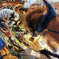
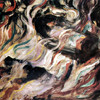
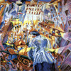
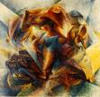
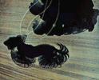
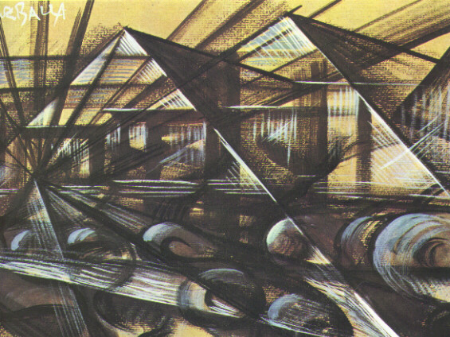
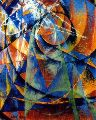
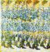

Al di là dei limiti obiettivi dell'esperienza futurista e della sostanziale superficialità ed inconsistenza di questo movimento artistico e letterario in relazione alla questione di fondo di una vera trasformazione della cultura legata alla necessaria trasformazione della società, è proprio in ambito futurista che il cinema è analizzato come mezzo autonomo d'espressione e utilizzato di conseguenza.
Il manifesto "La cinematografia futurista", redatto da Filippo Tommaso Marinetti e dai suoi seguaci nel 1916, è relativamente tardo rispetto alle precedenti e più note dichiarazioni programmatiche del movimento, dato che il manifesto di fondazione è del 1909 e già in precedenti interventi i futuristi avevano dimostrato, anche senza nominarlo esplicitamente di essere stati in vario modo influenzati dal cinema.
Nel manifesto sono inserite una serie di intuizioni sulle possibilità espressive del cinema, fuori dello spettacolo abituale, che possono essere considerate ingenue e cervellotiche e che, inoltre, con i mezzi tecnici di cui il cinema disponeva allora, erano difficilmente realizzabili; ma costituiscono, in ogni caso, un fertile terreno di sperimentazione. Si può osservare che alle radici di questo discorso cinematografico alternativo vi sia la posizione antitradizionalista del futurismo.
Il manifesto, in realtà non fa altro che prefigurare una realizzazione cinematografica delle provocazioni e delle sperimentazioni già attuate dai futuristi, durante le loro "serate", con la poesia e il teatro: fusione delle varie arti in unico impeto di superamento dei valori estetici tradizionali, scontro caotico e dissonante dei materiali visivi presi dai più diversi contesti, piena libertà da ogni uso logico, coerente, codificato o codificabile del nuovo mezzo.
Le affermazioni che Marinetti inserisce nel manifesto sul cinema , riguardano essenzialmente la rivendicazione della più assoluta libertà per il nuovo mezzo espressivo, l'individuazione degli elementi e delle possibilità autenticamente futuriste, nella convinzione che il cinematografo, essendo essenzialmente visivo, deve compiere innanzi tutto l'evoluzione della pittura.
Non si è purtroppo mai sviluppato un vero e proprio cinema futurista, a causa della scelta di privilegiare la sua funzione documentaria, a favore quindi della dimensione vitalistica e spettacolare (teatrale). Il cinema veniva considerato uno strumento di documentazione dell'arte-azione, del gesto futurista, dello stile di vita. Non si è mai avuto un cinema futurista anche perchè il solo film che a tutti gli effetti può definirsi "futurista", "Vita futurista", realizzato nel 1916 da Marinetti, Balla Corra, Ginna, Settimelli, è andato perduto, ha avuto una circolazione e una risonanza scarsissime e un'influenza assolutamente trascurabile. Comunque, anche se il cinema futurista non è mai nato veramente, la sua influenza sulle avanguardie cinematografiche successive è stata determinante, decisiva, assoluta.
Le esperienze dei futuristi in ambito cinematografico si possono collegare all'esigenza da parte di costoro di cogliere la dinamica dei tempi moderni, il movimento, può essere assunto come emblema stesso della "simultaneità", della "velocità", del "ritmo" di cui la vita contemporanea è impregnata. Attraverso il cinema, i linguaggi artistici tradizionali (statici) possono essere rinnovati, cogliendo e rappresentando il dinamismo del mondo moderno.
Si può osservare una sorta di continuità tra la scoperta del simultaneismo e la dissoluzione figurale: la velocità distrugge le immagini, quindi la pittura va inesorabilmente verso l'indistinto delle forme e dei volumi. Come afferma anche Umberto Boccioni, il maggior rappresentante del futurismo in pittura, nell'arte dell'istantaneità si nega il soggetto, per affermare gli elementi essenziali della sensibilità plastica.
|  |  |  |  |
Il problema della rappresentazione, sulla superficie del quadro, della continuità del movimento, cioè dello spostamento continuo dello stesso oggetto entro lo spazio, risulta ancora più approfondito nelle ricerche di Giacomo Balla, la cui adesione al futurismo è tale da indurlo a firmarsi "Futurballa". Egli risolve tale problema ripetendo più volte, in posizione diverse ma accostate, la stessa forma.
|  |  |  |  |